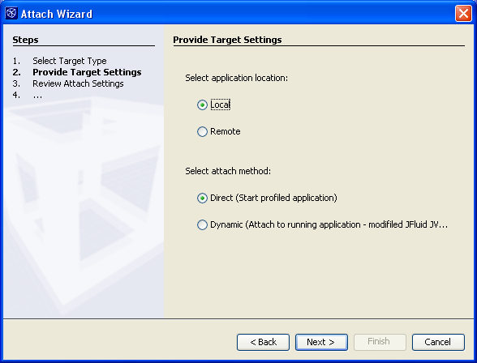
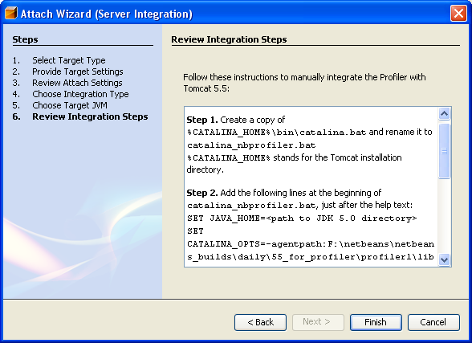

Using NetBeans Profiler 5.5
Attaching Profiler to Local or Remote JVM
The Attach mode of Profiler allows you to attach the tool to the application that is already running, or just about to start on a local or remote machine. This makes it ideally suited for profiling long-running applications, and particularly useful for profiling Web or Enterprise applications running on top of an application server, as well as the code of the application server itself.
Before you start profiling
For every Java platform that will be used for profiling the calibration must be run first. Without valid calibration data the profiling won't start.
Attachment Modes
When attaching Profiler to an application, you can choose between the following types of attachment:
- Dynamic attachment
Use this method to attach Profiler to a local application that is already running. This method does not require any additional application set up once the application is running on the modified JVM. No special command line options or environment variables are needed.
The following apply to dynamic attachment mode:
- The target application is not started by Profiler.
- This mode cannot be used to attach/start profiling on a remote machine. See Direct Attachment for a description of remote attachment.
- This mode does not work for JVM 5/6. If you want to attach to an appplication that is already running, the application must be started on top of the customized Profiler JVM (based on JDK 1.4.2), in exactly the same way as you would normally start it. Both the application JVM and the Profiler should be run by the same user to comply with the OS security requirements.
- Direct attachment
Use this method if you want to attach Profiler to an application early, before any Java code in it gets executed (for example, to profile its startup). You must use this mode if you are profiling an application on a remote machine or an application which uses JVM 5/6.
The following apply to direct attachment mode:
- The mode works for JVM 5/6.
- This mode is currently the only way to attach/start profiling an application on a remote machine. If you are profiling an application on a remote machine, download the Profiler server bundle for the remote machine platform at http://profiler.netbeans.org/download/index.html.
How it works internally
When you attach Profiler to a running application, you invoke a command in Profiler that sends an OS signal to the JVM. In response, the JVM loads and activates the Profiler VM-side library. You can then do exactly the same things on the running application that you can do when you start the application from within the tool. If you want to use the early ("direct") attachment to the JVM, you essentially specify the same library and a couple of other options on the target JVM's command line.
The Attach Wizard
The first time you are attaching Profiler to an application, you can use the Attach Wizard to specify and capture the settings to be used when attaching Profiler to that application. You use the Attach Wizard to specify the application type, location and attachment mode. If you want to change the settings, go through the Attach Wizard again.
How to use the Attach Wizard
The Attach Wizard is available when you choose Attach Profiler Using Main Project from the main menu. Before you open the wizard, ensure that your project is selected in the combo box at the top of the Select Profiling Task window.
- Click Attach Wizard in the Select Profiling Task window.
- Select the target type (and server type if the target is a J2EE Web/App Server) and click Next.
- Select the application or server location, do the following and click Next.
- If the location is remote, supply the Hostname and Host OS.
- If the location is local, select either Direct or Dynamic attachment. (If you select Dynamic attachment, you need to specify the working directory and how attachment is invoked in the next step.)
 - Review the attach settings and do one of the following:
- Click Next if you want to specify the integration type, the target JVM and view the integration steps. The integration steps will provide detailed information on how to integrate the Profiler with the application. If this is the first time you have attached profiler to the application, it is recommended that you thoroughly review and understand the integration steps.
- Click Finish and exit the wizard if you do not need to specify or modify the integration type.

After you finish the Attach Wizard, the attach settings are associated with the project. You can go through the Attach Wizard at any time if you want to change any of the settings.
How to attach Profiler to a running JVM (Dynamic attachment)
To attach in this mode, you must start the application on the customized 1.4.2 Profiler JVM. The following steps describe how to start your application on the customized JVM and then attach Profiler to the JVM.
Start the target application on top of the customized Profiler JVM.
- Locate the customized Profiler JVM
The Profiler JVM is located in the directory userdir > modules > profiler-ea-vm
The directory path may look like this:
/home/johnsmith/.netbeans/5.5/modules/profiler-ea-vm
(on UNIX®)
or
c:\Documents and Settings\JohnSmith\.netbeans\5.5\modules\profiler-ea-vm
(on Windows).
(replace "johnsmith" with your login name in these examples) - Launch the target application
Launch the application as you usually do but specifying the path to the Profiler JVM's executable on the command line
C:\j2sdk1.4.2_06\demo\jfc\SwingSet2>D:\userdir\modules\profiler-ea-vm\jre\bin\java -jar SwingSet2.jar
- Locate the customized Profiler JVM
Specify attachment settings in the Attach Wizard
If this is the first time you have attached Profiler to the application, click Attach Wizard to help with the initial attachment settings. These settings will be used when you attach Profiler to the application. If you have already specified the attachment settings, go to step 3.
- Choose Attach Profiler Using Main Project from the main menu.
- Choose your project from the combo box at the top of the Select Profiling Task window.
- Open the Attach Wizard and supply the details for the type and location
of the application. In the wizard, do the following:
- Select Local for the location.
- Select Dynamic as the attach method.
- Supply the working directory for the application.
Working Directory refers to the directory in which the target application was started, not the directory where the Profiler customized JVM is located. In the example above, the Working Directory is C:\j2sdk1.4.2_06\demo\jfc\SwingSet2, not D:\userdir\modules\...\jre\bin.
- Select either PID or Ctrl+Break as the invocation method.
Choose "PID" if you can distinguish between running VMs by their command line arguments and/or Process IDs (PIDs). If the VM you want to attach to has a console window, choose "Use Ctrl+Break".
Make sure you have write access permission for the Working Directory. This is required, since Profiler will need to temporarily place a special small file in this directory, containing the information that the VM needs to start the Profiler communication library.
- Click Finish to exit the Attach Wizard and return to the Select Profiling Task window.
The settings are now associated with the project. Use the Attach Wizard again if you want to change some of the profiling settings for the project.
-
Specify the profiling task
Choose a profiling task from the list of available tasks. This list is the same as in the Select Profiling Task window that appears when Profiling an application within the IDE.
Attach Profiler to the Target Application
To attach Profiler, click Attach at the bottom of the Select Profiling Task window. When you profile an application using dynamic attachment, when you click Attach one of the following occurs:
- If you chose "PID" as the invocation method, clicking Attach completes the attachment process.
- If you chose "Use Ctrl+Break" as the invocation method, clicking Attach opens a progress dialog box. Go to the console window of the target VM and on your keyboard hit Ctrl+Break (on Windows) or Ctrl+\ (on Solaris or Linux). This sends a signal to the JVM that activates the Profiler agent and starts the connection.
Note that when you hit Ctrl+Break, the JVM prints the list of currently active Java threads with their stacks and then checks if it can start the Profiler agent. If the Working directory name you gave is correct, the VM starts this library and prints "JFluid: target app manager starting on port ...", and the progress dialog in the Profiler disappears. Otherwise, nothing happens and your application just continues running.
Detach Profiler from the Target Application
To detach Profiler from the target application, choose Profile > Detach from the main menu. This sends a command to deactivate the Profiler code in the target JVM and terminate the connection. The message connection with agent closed appears in the console window (if the target application has a console window).
How to attach Profiler to a JVM on startup (Direct Attachment)
You must use this attachment mode if the application you want to profile is running on JVM 5/6 or is on a remote server. If you are profiling an application on a remote machine, download the Profiler server bundle for the remote machine platform at http://profiler.netbeans.org/download/index.html.
Although attaching to a running application is generally the most convenient way to connect Profiler with the target application, you may occasionally find that it is not completely adequate for your purposes. An example of this is when you want to profile some code that is executed very early upon application startup, but it is difficult to start the application directly from Profiler (e.g. because it is normally started using a very big and complex launch script). Remote profiling is another example. In these situations, you can use the Direct attachment mode to "attach on startup". This is the same attachment mechanism used by most of the conventional profiling tools for Java.
- Modify startup options of the target application JVM.
Before you start up the target JVM, you need to add some parameters to the Java launcher to start a Profiler native library (profilerinterface) inside the target JVM.
The parameters are slightly different, depending if you are running the JVM on the modified JDK 1.4.2 or on JVM 5/6.
On modified JDK 1.4.2, follow these steps:
-
Add the following entry to your native library path.
This entry is a platform-specific Profiler module installation subdirectory, that contains native libraries.
For the username johnsmith, the full command lines should look similar to this:-
On Solaris/SPARC (This should be added to the LD_LIBRARY_PATH environment variable):
setenv LD_LIBRARY_PATH /home/johnsmith/.netbeans/5.5/lib/deployed/jdk142/solaris-sparc
-
On Windows (This should be added to the PATH environment variable):
set PATH="c:\Documents and Settings\johnsmith\.netbeans\5.5\lib\deployed\jdk142\windows";%PATH%
-
On Solaris/SPARC (This should be added to the LD_LIBRARY_PATH environment variable):
- Add the following parameter to the Java launcher command line:
To start the target customized 1.4.2 JVM in the "Direct attachment" profiling mode, you need to add the following to the command line.
-Xrunprofilerinterface:~/.netbeans/5.5/lib,5140For the username johnsmith, the full command lines should look similar to this:
- On Solaris/SPARC platform (assuming csh or tcsh is your shell):
/home/johnsmith/.netbeans/5.5/modules/profiler-ea-vm/jre/bin/java -Xrunprofilerinterface:/home/johnsmith/.netbeans/5.5/lib,5140
MainClass - On Windows:
"c:\Documents and Settings\johnsmith\.netbeans\5.5\modules\profiler-ea-vm\jre\bin\java"
-Xrunprofilerinterface:"\"c:\Documents and Settings\johnsmith\.netbeans\4.0\lib\"",5140 MainClass
- On Solaris/SPARC platform (assuming csh or tcsh is your shell):
On JVM 5/6, follow these steps:
- Add the following parameter to the Java launcher command line:
To start the target JVM 5/6 in the "Direct attachment" profiling mode, you need to add the following to the command line.
-agentpath:~/.netbeans/5.5/lib/deployed/jdk15/solaris-sparc/libprofilerinterface.so=~/.netbeans/4.0/lib,5140For the username johnsmith, the full command lines should look similar to this:
- On Solaris/SPARC platform (assuming csh or tcsh is your shell):
java
-agentpath:/home/johnsmith/.netbeans/5.5/lib/deployed/jdk15/solaris-sparc/libprofilerinterface.so=
/home/johnsmith/.netbeans/4.0/lib,5140
MainClass - On Windows:
java
-agentpath:"c:\Documents and Settings\johnsmith\.netbeans\5.5\lib\deployed\jdk15\windows\profilerinterface.dll"=
"\"c:\Documents and Settings\johnsmith\.netbeans\5.5\lib\"",5140 MainClass
- On Solaris/SPARC platform (assuming csh or tcsh is your shell):
Note: on Windows you may need to wrap the argument of the -Xrunprofilerinterface or -agentpath inside double quotes if the path contains space characters.
-
Add the following entry to your native library path.
Start the target JVM
Once you have started the JVM with the above options, it will not start your Java application until you perform actions described below.
Specify attachment settings in the Attach Wizard
If this is the first time you have attached Profiler to the application, click Attach Wizard to help with the initial attachment settings. These settings will be used when you attach Profiler to the application. If you have already specified the attachment settings, go to step 4.
- Choose Attach Profiler Using Main Project from the main menu.
- Choose your project from the combo box at the top of the Select Profiling Task window.
- Open the Attach Wizard and supply the details for the type and location
of the application. In the wizard, do the following:
- Select the application location and do the following:
- If the location is remote, supply the Hostname and Host OS.
- If the location is local, select Direct attachment.
- Review the settings and click Next
- Select the integration type and click Next.
- Select the target JVM and click Next.
- Read and follow the integration steps for attaching Profiler.
- Select the application location and do the following:
- Click Finish to close the Attach Wizard.
The settings are now associated with the project. Use the Attach Wizard again if you want to change the profiling settings for the project.
-
Specify the Profiling task to perform
Choose a profiling task from the list of available tasks. This list is the same as in the Select Profiling Task window that appears when Profiling an application within the IDE.
Attach Profiler to the waiting JVM
Click on the Attach button. This will start your Java application and apply instrumentation for the profiling task you chose above.
Changing the profiling task
Once the connection is established and Profiler is attached to the target application, you can profile the application as you would if you started the application from within Profiler. You can change the profiling task you are running on the target application without stopping or restarting the application.
To change the profiling task without detaching
- Choose Profile > Modify Profiling (Alt+Shift+F2) from the main menu,
or click Modify Profiling ( ) in the Profiler window.
) in the Profiler window. - Select a new profiling task and set any profiling parameters.
- Click OK.
Profiler performs the new instrumentation on the target application without starting or stopping the application.